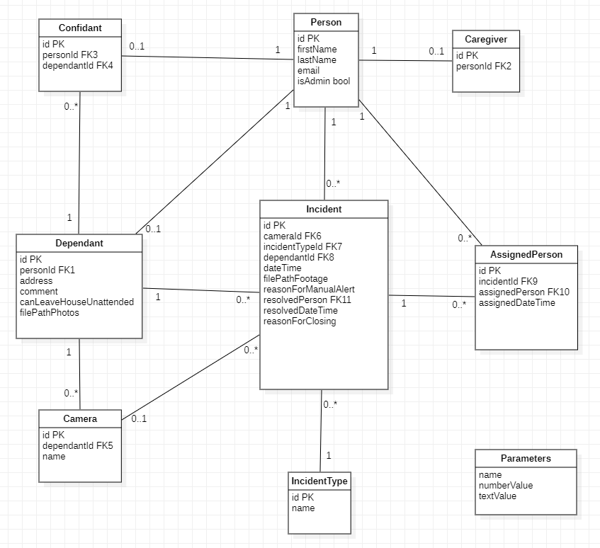
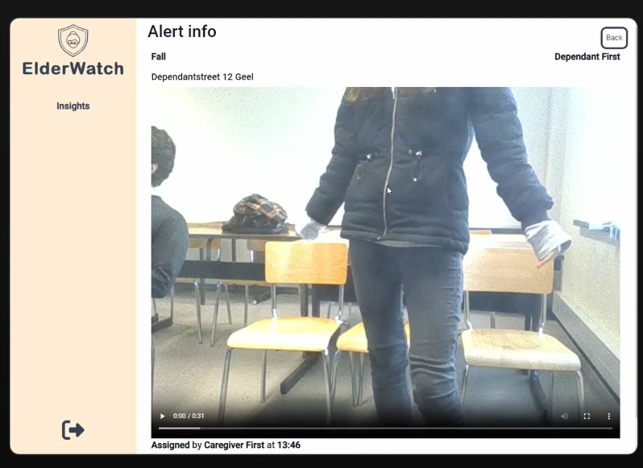
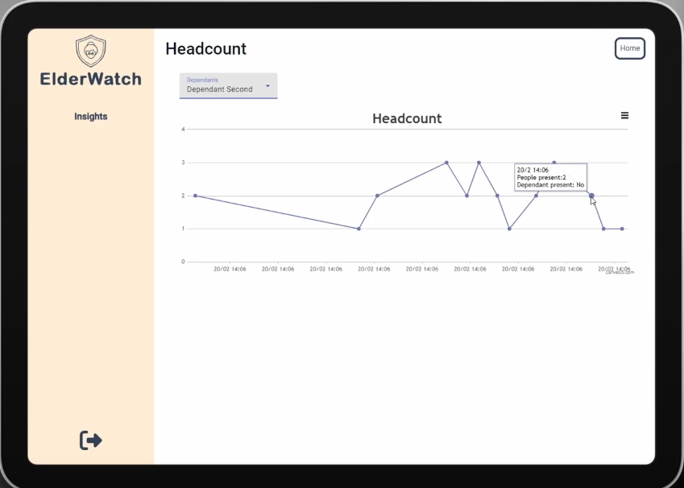
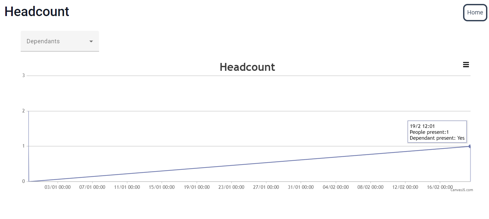

Our project, ElderWatch, developed in collaboration with Mediaan, aims to help elderly individuals maintain their independence by using advanced monitoring systems. As the AI lead, I was responsible for implementing a people counter, face ID for the elderly, and a fall detection system.

General Overview
ElderWatch is designed to ensure timely responses to incidents without overwhelming caregivers. Key features include:
Fall Detection System:
Uses computer vision to detect falls.
Creates an incident when a fall is detected.
Notifies designated confidants, who can then assign or escalate the alert.
Caregivers can view and resolve escalated alerts.
Detailed alert pages show video excerpts of falls, status updates, timestamps, and comments.
People Counter and Face ID:
Monitors the number of people in the house.
Identifies if the elderly person is present.
Provides caregivers with insights through graphs showing the number of people in the house over time.
Automatically resolves fall alerts if more than one person is in the house or if the elderly person is not present, preventing unnecessary alerts.



Conclusion
ElderWatch successfully integrates AI to enhance the safety and independence of elderly individuals. It combines fall detection, people counting, and face recognition to provide caregivers with crucial insights and timely alerts, ensuring a balanced and effective monitoring system.